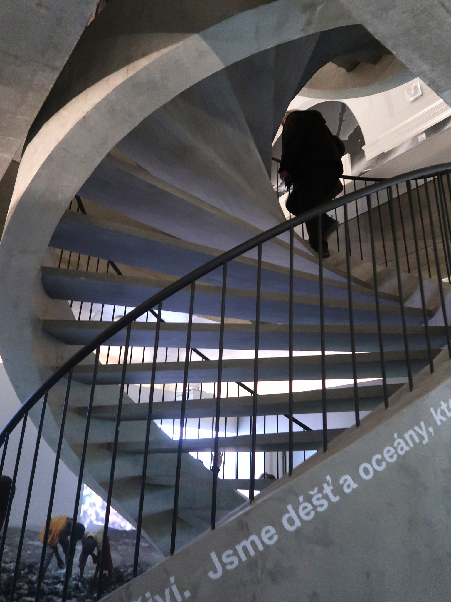

Moniérková schodiště
Spirála DNA – Krkonošské muzeum Vrchlabí
Monolitické točité schodiště s integrovaným nosným betonovým zábradlím (moniérkou) tvarovaným do podoby dvojité šroubovice DNA pro expozici Krkonošského muzea.
Trida betonu: C 35/45 XF1 Konstrukce: Monolitická samonosná spirála s moniérkou